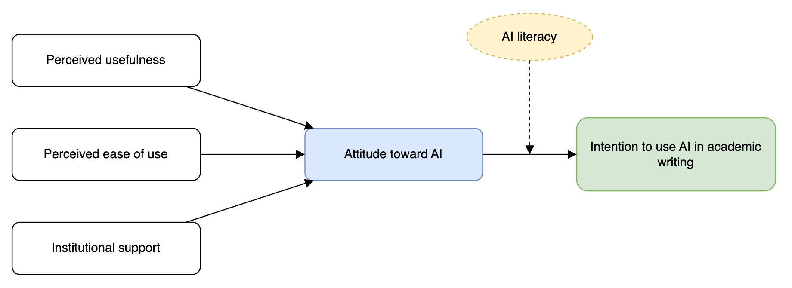

Hands-on training workshop
Workshop: Gemini AI in Academic Writing
Learn to use Google Gemini as a thinking partner for research and writing: faster literature work, clearer drafts and sharper editing, while keeping your scholarship honest, original and your own.
Workshop modules
Getting Started with Gemini
What Gemini is, Free vs paid plans vs Workspace for Education (Malaysian pricing), a tour of the interface, and what it can and cannot do.
02Prompting Essentials
The anatomy of a good prompt, a reusable framework, and how to refine output through conversation.
03Literature & Research
Why Gemini can't search Web of Science or paywalled databases, grounding your reading in Gemini Notebook, drafting a short literature review from it, and verifying every source.
04Drafting & Structure
Outlines, paragraph logic, abstracts and introductions, plus Gems, Canvas and Nano Banana for quick drafting, documentation and research diagrams.
05Editing & Language
Clarity, concision, academic tone, simulated peer review, drafting in your own voice, and fixing output that misses the mark.
06Ethics & Integrity
Universiti Malaya's AI policy and levels of AI use, disclosure, authorship, data privacy and publisher policies.
07Conclusion & Next Steps
The key lessons on one page, a toolkit for choosing the right Gemini feature, five questions to ask before every use, and a four-week plan to keep learning on your own.
The guiding principle
Gemini assists; you author. Every claim, citation and conclusion in your work must be one you have checked, understood and can defend. Use AI to think better and work faster, never to replace your judgement.
Module 1
Getting Started with Gemini
Set up your access, learn your way around, and build an accurate mental model of what a large language model is.
Learning objectives
- Access Gemini and manage your chats and settings
- Compare the Free, paid (AI Plus/Pro) and Google Workspace for Education versions, including Malaysian pricing, Gemini Notebook and data protection
- Explain, in plain terms, how a large language model generates text: tokens, next-token prediction and the context window
- Identify tasks where Gemini helps, and where it is risky
1.1 What is Gemini?
Gemini is Google's family of large language models (LLMs), available as a chat assistant at gemini.google.com, as a mobile app, and inside Google Workspace (Docs, Gmail, Drive) for eligible accounts.
An LLM predicts plausible text based on patterns learned from vast amounts of data. It does not look facts up in a database by default. This is why it can write fluently and still be confidently wrong.
1.2 How a large language model generates text
Knowing what happens "under the hood" explains both why Gemini writes so fluently and why it sometimes invents things. Four steps explain it: text becomes tokens, the model makes a next-token prediction one token at a time, fluent output is not necessarily true, and it can only work with what fits in its context window.
Step 1: Text is broken into tokens
An LLM doesn't read words or letters. It reads tokens: common chunks of characters. Frequent words are usually a single token, while rarer words, other languages, numbers and codes are split into several pieces. Each coloured block below is one token.
Illustrative: exact splits differ between models. As a rule of thumb, one English token is about ¾ of a word, and Malay and other languages often need more tokens per word.
Why this matters
A DOI, page range or statistic is not stored as one fact. It is produced piece by piece, so a single wrong digit gives you a DOI that looks perfect but points nowhere. Plan limits such as "~50 pages per chat" (see 1.4) are really token limits, and non-English text uses them up faster.
Step 2: It predicts the next token, one at a time
Given the text so far, the model calculates a probability for every possible next token, picks one (usually a likely one, with some randomness), adds it to the text and repeats. Step through the demo below to watch a sentence being built.
Probabilities are illustrative. Notice the near-tie at step 6 ("clarity" 27% vs "quality" 26%): this is why the same prompt can give different answers each time.
Nothing in this process looks anything up or checks whether the sentence is true. The model chooses what is statistically likely to come next, based on patterns in its training data. Most of the time, likely text is also correct text. When it isn't, the output is still fluent and confident.
Step 3: Fluent is not the same as true
Here is how a fabricated citation happens. Asked for evidence, the model produces something with the shape of a reference: an author name common in the field, a recent year, a percentage, a journal-like title and a DOI-like string. Each token is plausible on its own; the combination may not exist.
Ungrounded answer (ordinary chat, no sources)
Doe et al. (2021) found that AI feedback improved essay quality by 23% (Journal of Imaginary Studies, 14(2), 45–61, doi:10.1016/j.jis.2021.04.012).
Grounded answer (Gemini Notebook, using a PDF you added)
The authors report that students who received automated feedback revised more often than the control group [1], which suggests feedback may support revision habits.
- Green: traceable to a source you supplied. Still click the citation and check it.
- Amber: a plausible generalisation or interpretation. Decide whether you agree, and support it with evidence.
- Red: specific details (names, years, numbers, titles, DOIs) with no source behind them. Verify or delete.
Step 4: It only sees what fits in its context window
Everything the model can "see" at once (your instructions, uploaded files and the conversation so far) has to fit in its context window, which is measured in tokens. Anything outside it, including earlier chats, is not available unless you add it again.
Shown at roughly Free-plan scale: one 12,000-token paper already fills almost half the window.
How big is the window on each plan?
The window size is one of the biggest differences between plans (see the table in 1.4). The bars are drawn to scale:
- Free ~32,000 tokens · ~50 pages About one or two journal articles plus your conversation
- Google AI Plus ~128,000 tokens · ~200 pages About 6–8 articles, or one thesis chapter with its key sources
- Google AI Pro ~1,000,000 tokens · ~1,500 pages A full thesis draft plus dozens of papers in one chat
- Workspace for Education Higher than Free · ~1,500 pages with add-on Depends on your university's edition and whether it has the AI Pro for Education add-on
Indicative mid-2026 figures that change often. "Pages" assume English text; Bahasa Melayu and other languages use more tokens per word (Step 1), so fewer pages fit.
Signs you've hit the limit
Gemini forgets instructions from early in the chat, misses parts of a long document, or contradicts what it said before. It usually won't tell you.
Work within it
Go section by section, or start a fresh chat with a short brief of what matters (the reset prompt in 5.6).
Go beyond it
For a large reading list, use Gemini Notebook (3.4). It works across many sources and cites them, instead of holding everything in one chat.
Key points to remember
- Tokens, not words: text is processed in chunks, and numbers, codes and non-English words use more of them.
- Prediction, not lookup: answers are generated from patterns, not retrieved from a database, unless the tool is grounded in sources (web search or Gemini Notebook).
- Randomness: the same prompt can produce different answers, so regenerate and compare when it matters.
- Limited memory: only what fits in the context window is used, and training data has a cut-off date.
- Confidence is not evidence: fluent, specific-sounding details are exactly where fabrication hides.
1.3 Getting access
- Go to gemini.google.com and sign in with your Google account. If your university provides Google Workspace for Education (often your student or staff email), sign in with that account instead, because it comes with stronger data protection.
- Review Settings → Activity to understand how your conversations are stored and whether they may be used to improve Google's services.
- Start a new chat for each distinct task. Separate chats keep context clean and outputs focused.
1.4 Which Gemini are you using? Free, paid plans and Workspace for Education
The plans share the same interface but differ in capability, Gemini Notebook limits and, most importantly for researchers, how your data is handled. Prices below are for Malaysia.
| Feature | FreePersonal Google account | Google AI PlusPersonal, paid | Google AI ProPersonal, paid | Workspace for EducationUniversity account (Gemini for Education) |
|---|---|---|---|---|
| Price (Malaysia) | RM0 | RM23.99 Free for 12 months for students* |
RM97.99 RM23.99 for students* |
Included** Paid add-on optional† |
| Models | Fast model; limited Pro use | More Pro use | Full Pro access | Premium models |
| Text per chat | ~50 pages | ~200 pages | ~1,500 pages | Higher; ~1,500 pages† |
| Deep Research | A few per month | More | Many per day | Higher; more† |
| Gemini Notebook notebooks × sources |
100 × 50 | 200 × 100 | 500 × 300 | ✔ Included; 5× limits† |
| Gemini in Gmail & Docs | Limited | ✔ Personal apps | ✔ Personal apps | ✔ Full access† |
| Chats used to train models / read by reviewers | Yes, by default | Yes, by default | Yes, by default | No |
| University data agreement & admin controls | ✘ | ✘ | ✘ | ✔ |
* Student offers are for college and university students aged 18 and above, valid until 31 December 2026. Google AI Ultra starts from RM429.99/month. ** Gemini for Education is part of every Google Workspace for Education edition, but your university decides whether to switch it on and whether to buy the AI Pro for Education add-on. Users under 18 get a restricted experience. † With the Google AI Pro for Education add-on, purchased by the university. Prices and limits are indicative as of mid-2026 and change often. Check gemini.google/subscriptions and your university's IT department (e.g. its Pusat Teknologi Maklumat) for current details.
Paying does not make it private
Google AI Plus and Pro give you more capability, not more privacy. They run under the same consumer terms as the free version, so conversations may be read by reviewers and used to improve Google's models unless you change your activity settings. This includes the free student offers. For unpublished manuscripts, research data, interview transcripts or anything covered by research ethics approval or the Personal Data Protection Act 2010 (PDPA), use your university Google Workspace for Education account if it provides Gemini, and follow your university's data policy.
What this means for Gemini Notebook
- Free: enough for one thesis chapter or a small review, with up to about 50 papers per notebook.
- AI Plus (free for students until the end of 2026): about 100 sources per notebook, which is a good fit for most master's and PhD literature reviews.
- AI Pro: suits large or systematic reviews (hundreds of sources per notebook), and Notebooks also appear inside the Gemini app, so chat and notebook share the same sources.
- Workspace for Education: the safest place for your own drafts, transcripts or unpublished data, because sources and chats are not read by reviewers or used to train models. Gemini Notebook is included, with 5× higher limits if your university has the AI Pro for Education add-on. Ask your IT department whether it is switched on for your account.
Which should you use?
Use your university Google Workspace for Education account for research work whenever it is available. Students can claim AI Plus free for learning and for non-sensitive, public material. Consider AI Pro if you need the most capable model or very large notebooks and your material is not confidential.
1.5 Interface tour
Prompt box
Type instructions, paste text, or attach files such as PDFs, documents and images.
Model selector
Choose between faster and more capable models, depending on your plan.
Chat history
Revisit, rename, pin or delete earlier conversations.
Response tools
Regenerate, edit your prompt, copy, export to Docs, or use "double-check" to search for supporting or conflicting content.
Gems and Canvas
Gems are saved assistants with standing instructions; Canvas is a side-by-side document editor. Both are covered in Module 4.
Deep Research
Where available, runs multi-step web research and produces a cited report. Verify its sources like any other.
Features and names change often and vary by plan and region. If something here doesn't match your screen, look for the equivalent option.
1.6 Strengths and limitations
Gemini is good at
- Brainstorming and reframing ideas
- Explaining unfamiliar concepts at different levels
- Summarising text you provide
- Suggesting structure and outlines
- Improving clarity, grammar and flow
- Acting as a critical "reviewer" of your draft
Gemini is risky for
- Generating references, which may be fabricated ("hallucinated")
- Exact statistics, dates and quotations
- Up-to-date or niche disciplinary knowledge
- Writing content you then submit as your own
- Handling confidential or identifiable data
- Making final judgements on quality or truth
Hands-on exercise 1
CoreIn the workshop · about 15 min
- Find out which version you are using: check the account shown in the top-right corner of Gemini (personal or institutional) and any plan badge. Then open Settings → Activity and note whether your conversations are being saved and used to improve Google's services. Using the table in 1.4, decide which account you should use for your research.
- Ask: "List five peer-reviewed papers on [your topic] with DOIs." Check every one in Google Scholar or your library database. How many are real and accurately described? (1.2, 1.6)
- Discuss: what does this tell you about how you should, and shouldn't, use Gemini?
ExtensionAfter the workshop, at your own pace
- Ask Gemini to explain a key concept from your field to a first-year undergraduate, then to an expert reviewer. Compare the two.
- Regenerate the expert answer twice. What changed between versions, and what stayed the same? Use the next-token demo in 1.2 to explain why.
Module 2
Prompting Essentials
The quality of Gemini's output depends on the quality of your instructions. Learn a repeatable framework for writing effective prompts.
Learning objectives
- Structure prompts with role, task, context, format and constraints
- Refine output through iterative follow-up prompts
- Build a personal library of reusable academic prompts
2.1 The RTCFC framework
Role
Who should Gemini act as?
"Act as an experienced journal reviewer in public health…"Task
What exactly should it do?
"…evaluate the logical flow of my introduction…"Context
Background it needs.
"…for a Q1 journal; audience is epidemiologists…"Format
How the answer should look.
"…as a table: issue, location, suggested fix…"Constraints
Limits and rules.
"…do not rewrite my text; max 200 words."2.2 Weak vs. strong prompts
Weak
"Improve my abstract."
Strong
"You are an editor for an engineering journal. Review the abstract below for clarity and concision. Keep all technical terms and findings unchanged. List your suggested edits as bullet points with a one-line reason each, then show a revised version under 250 words."
2.3 Iterate, don't restart
Treat Gemini as a conversation. After the first response, steer it:
- "Make it more concise."
- "Explain your reasoning for point 3."
- "That's too informal. Use a formal academic register."
- "Give me three alternatives."
- "What are the weaknesses of this argument?"
- "Ask me questions before you answer."
2.4 Prompt templates
Copy, adapt and save these templates. Text in [brackets] is for you to fill in.
Act as a tutor in [discipline]. Explain [concept] to a [level, e.g. master's student] in under 200 words. Then give one concrete example from [context] and one common misconception about it.
I am developing a research argument: [your argument in 2–3 sentences]. Do not agree with me by default. Ask me five probing questions, one at a time, that a sceptical examiner would ask. Wait for my answer before asking the next.
You are my academic writing assistant for a [PhD thesis / journal article] in [field]. Always: use British/American English [choose]; preserve my meaning and technical terms; explain each suggested change; never invent citations, data or quotations; flag any claim that needs a reference.
Tip: ask for uncertainty
Add "If you are unsure, say so" or "Mark anything that should be verified" to your prompts. It won't eliminate errors, but it makes them easier to spot.
Hands-on exercise 2
CoreIn the workshop · about 15 min
- Write a one-line "weak" prompt for a task from your current writing.
- Rewrite it using all five RTCFC elements (2.1), following the weak vs. strong example (2.2).
- Run both and compare. Then refine the strong version with at least two follow-up prompts (2.3), including "If you are unsure, say so."
ExtensionAfter the workshop, at your own pace
- Run the Socratic partner template (2.4) on your own research argument and answer all five questions. Which question exposed the weakest point?
- Save the prompts that worked best into a personal prompt library (a Google Doc) to reuse after the workshop.
Module 3
Literature & Research
Use Gemini to explore ideas, digest reading faster and draft a short literature review from your own sources, while keeping scholarly databases as your source of truth.
Learning objectives
- Use Gemini to refine topics, research questions and search strings
- Explain why Gemini cannot replace Web of Science, Scopus and other subscription databases
- Ground summaries and comparisons in your own sources with Gemini Notebook
- Turn a notebook into a short, source-grounded literature review in the Gemini app
- Apply a verification routine to every source and claim
Golden rule
Find sources in scholarly databases; use Gemini to work with them. Search Scopus, Web of Science, PubMed, Google Scholar or your library catalogue. Never cite a reference Gemini gives you until you have located and read it yourself.
3.1 Refining a topic and research questions
My broad research interest is [topic] in the context of [population/setting]. Suggest five focused, researchable questions. For each, state the likely methodology, one feasibility risk, and how it could contribute to the field. Then ask which direction I want to develop.
3.2 What Gemini can and cannot search
When Gemini "searches", it uses the open web through Google Search. It does not log in to your library, so it cannot query subscription databases such as Web of Science, Scopus, PsycINFO, EBSCOhost, ProQuest or IEEE Xplore, and it cannot read paywalled full texts. These platforms sit behind institutional authentication (campus IP, VPN or single sign-on) that only you have. The same applies to Deep Research: its reports draw on publicly reachable web pages.
No access to indexed databases
Gemini cannot run a search in Web of Science or Scopus, apply their field tags (e.g. TS=, TITLE-ABS-KEY) or filters, or export records. Anything it says about "Scopus results" is a guess, not a query.
Abstracts, not full texts
For paywalled articles it can usually see only the title, abstract or another page that mentions the paper. A summary may therefore miss the methods, limitations and actual numbers, or misstate them.
Not reproducible
The same question can return different sources on different days, and there is no search log. That makes Gemini unsuitable as the search method for systematic or scoping reviews (e.g. PRISMA requires documented, repeatable search strategies).
Indexing and metrics are unreliable
Gemini cannot check whether a journal is currently indexed in WoS or Scopus, or its Impact Factor, quartile or CiteScore. JCR and Scopus metrics are subscription data, and indexing status changes. Check the official lists.
Coverage bias
Web-visible, open-access, highly cited and English-language work is over-represented. Very recent, regional, non-English and paywalled literature is easily missed, and predatory or low-quality sources can slip in.
Fabricated references
Without a database behind it, Gemini may produce plausible but non-existent citations, wrong DOIs or mismatched author–year details (see Module 1, Exercise 1).
| Task | Web of Science / Scopus (via your library) | Gemini (chat or Deep Research) | Gemini Notebook |
|---|---|---|---|
| Find peer-reviewed literature | ✔ Comprehensive, curated index | △ Open web only, incomplete | ✘ Uses only sources you add |
| Reproducible Boolean search | ✔ Saved, exportable queries | ✘ | ✘ |
| Read paywalled full text | ✔ With subscription access | ✘ Abstract or metadata at best | ✔ If you upload the PDF |
| Citation counts, indexing, quartiles | ✔ Authoritative | ✘ Often outdated or invented | ✘ |
| Summarise and compare papers | ✘ | △ Risky without the full text | ✔ Grounded, with citations to passages |
✔ suitable · △ use with caution · ✘ not suitable
3.3 Generating search terms
Gemini can't run the database search for you, but it can help you design one that you then run yourself.
Help me build a Boolean search string for [Web of Science / Scopus] on [research question]. Identify the key concepts, list synonyms and related terms for each, and combine them with AND/OR and truncation (*), using the correct field tags for that database. Explain each choice so I can adjust it. I will run and refine the search myself.
3.4 Grounding your review with Gemini Notebook
Gemini Notebook (formerly NotebookLM) is Google's source-grounded research tool. Unlike an ordinary chat, a notebook answers only from the sources you add to it and links each statement to the passage it came from. Notebooks are also available inside the Gemini app, and they sync between the two. Availability, plan requirements and source limits vary and change, so check what your account offers.
Why it suits literature work
- Answers are limited to your sources, which greatly reduces invented content
- Inline citations let you click through to the exact passage and check it
- Works on the full texts you legally obtained through your library
- Accepts PDFs, Google Docs and Slides, web pages, YouTube videos and pasted text
- Can generate briefings, study guides, mind maps and audio overviews of a reading set
What it still can't do
- Find literature for you: it is only as complete as the sources you add
- Guarantee accuracy: it can still misread tables, figures, equations or scanned PDFs
- Judge study quality or risk of bias reliably
- Replace reading: a cited passage may be quoted out of context
- Override licences: check your library's and publishers' terms before uploading paywalled PDFs, and keep notebooks private
Recommended workflow
Search Web of Science, Scopus or discipline databases via your library
Screen titles and abstracts, and export the records (RIS/BibTeX) to your reference manager
Obtain full texts through library access or open-access copies
Add the papers to a Gemini Notebook for one review topic
Ask grounded questions, then click each citation to verify it
Using only [paper title], summarise: (1) research aim, (2) method and sample, (3) key findings with numbers, (4) stated limitations, (5) relevance to my study on [topic]. Cite the passage for each point. If something is not in the paper, write "not reported".
Across all sources in this notebook, how is [key concept] defined and measured? Group the sources by approach, cite each one, and point out where they disagree or use incompatible definitions.
Based only on these sources, which aspects of [research question] are well covered, which are only mentioned briefly, and which are not addressed at all? Do not draw on outside knowledge. I will search the databases for anything missing.
3.5 Building a synthesis matrix
After summarising several papers you have read, ask Gemini to tabulate them so that patterns and gaps become visible:
| Study | Context | Method | Key finding | Limitation | Theme |
|---|---|---|---|---|---|
| Author A (2022) | Malaysian SMEs | Survey, n = 310 | … | Self-report bias | Adoption |
| Author B (2023) | EU manufacturing | Case study | … | Single site | Barriers |
| Author C (2024) | Global | Meta-analysis | … | Heterogeneity | Outcomes |
Here is my synthesis matrix of [n] studies: [paste]. Identify (a) points of agreement, (b) contradictions, and (c) under-researched contexts, populations or methods. Base your answer only on the matrix and indicate which studies support each point.
3.6 Workflow: from notebook to a short literature review
Once your papers are in a Gemini Notebook, you can turn them into a short, source-grounded literature review: a few paragraphs for an introduction, a proposal or the opening of a thesis chapter. You do the reading, questioning and arguing in the notebook, then bring the notebook into the Gemini app to draft, and finally check everything yourself.
Collect 5–15 full-text papers from your database search in one notebook (3.2–3.4)
Question them in the notebook and save the best answers as notes
Decide your argument: build the synthesis matrix (3.5) and write a 3–5 point outline
Bring the notebook into the Gemini app: + → NotebookLM → Add notebook
Draft the review with the prompt below, ideally in Canvas
Verify and revise: check every citation (3.7), rewrite in your voice (5.5), log it (6.2)
Step 2: questions to ask in the notebook first
Ask these inside Gemini Notebook, one at a time, and save useful answers as notes. They also show you whether your sources are enough before you write anything.
1. What are the main themes across these sources on [topic]? Group the sources under each theme and cite them. 2. Where do the sources agree, and where do they contradict each other? Explain possible reasons (context, method, sample). 3. Which methods, populations and settings are used? Which are missing? 4. How has thinking on [topic] changed over time across these sources? 5. Based only on these sources, what questions remain unanswered?
Step 4: bring the notebook into the Gemini app
In the Gemini app, click + in the prompt box, choose NotebookLM (now Gemini Notebook; the label may differ on your account), then pick your notebook. On Workspace for Education accounts, your administrator must have Gemini Notebook switched on. If you can't see the option, open the notebook in Gemini's Notebooks section, or work directly in Gemini Notebook.
Step 5: the drafting prompt
Using ONLY the sources in the attached notebook "[notebook name]", write a short literature review (about [600–800] words) on [topic] for the [introduction / Chapter 2] of my [thesis / article]. Structure it around MY argument: - [point 1] - [point 2] - [point 3] Requirements: 1. Synthesise by theme, not one paragraph per paper. For each theme, say where studies agree, where they differ, and why (context, method, sample). 2. Cite every claim in APA 7 author–year format, using only notebook sources. Do not add outside sources, facts or statistics. 3. If a point needs evidence that is not in the notebook, write [NEED SOURCE] instead of filling the gap. 4. End with one paragraph on the gap my study addresses: [your gap in one sentence]. 5. Use British English and a formal, cautious academic tone [or: follow my voice profile: paste it]. After the review, list every source you cited and the claim it supports, so I can check them.
For each citation in the review, quote the exact passage from the notebook source that supports it. Flag any sentence where the support is weak, indirect or missing, and any place where two sources were merged into one claim.
Why this workflow works
- The draft is grounded in papers you found and read, not in Gemini's memory
- Your outline sets the argument; Gemini only organises and connects the evidence
- [NEED SOURCE] markers show you exactly where your reading is thin
- The follow-up prompt makes every citation quick to check
Still your job
- Check each citation against the paper itself (3.7): grounded answers can still misattribute
- Build the reference list in your reference manager (Zotero, Mendeley, EndNote), not from Gemini
- Rewrite the draft substantially in your own voice (5.5); it is a starting point
- Confirm your assessment's UM AI level allows this (Level 3) and declare it (6.2)
Keep it short, and go theme by theme
This works best for reviews of up to about 1,000 words. For a full literature review chapter, run the drafting prompt once per theme from your outline, check each part, then join and rewrite them yourself. Long single requests are where sources get blurred together.
3.7 The verification routine
- Exists? Find the source in a database or via its DOI at doi.org.
- Accurate? Check the authors, year, title and journal against the publisher's page.
- Supports the claim? Read the relevant section yourself. Summaries can distort findings.
- Still valid? Check for retractions or corrections, for example via the Retraction Watch database.
Hands-on exercise 3
CoreIn the workshop · about 25 min
- Ask Gemini (without a notebook): "What are the five most-cited Web of Science articles on [your topic] since 2020?" Then run a real search in Web of Science or Scopus and sort by citations. Compare the two lists (3.2).
- Download three full-text papers through your library and add them to a new Gemini Notebook. Run the cross-source comparison prompt (3.4).
- Click through at least five citations in the answer. Did each passage really support the statement? Record any errors or omissions you find.
ExtensionAfter the workshop, at your own pace
- Use the research question refiner (3.1) on your topic and choose the question you would actually pursue.
- Use the search-string prompt (3.3) for your topic and run the string in Web of Science or Scopus yourself.
- Ask the notebook to build a synthesis matrix of the three papers (3.5), then run the gap finder prompt on it.
- Apply the four-step verification routine (3.7) to one paper: does it exist, is the metadata accurate, does it support your claim, and has it been retracted or corrected?
- Run the notebook question set (3.6) on your notebook, write a 3-point outline of your argument, then bring the notebook into the Gemini app and draft a 300–400 word review of one theme with the drafting prompt. Use the follow-up prompt to check every citation, and count the [NEED SOURCE] markers: what should you read next?
Module 4
Drafting & Structure
Move from ideas to a well-organised draft, using Gemini (including Gems, Canvas and Nano Banana diagrams) as a scaffold while the argument and words stay yours.
Learning objectives
- Generate and critique outlines for papers and chapters
- Strengthen paragraph structure and logical flow
- Draft and refine abstracts and introductions with AI feedback
- Build Gems as reusable drafting assistants and use Canvas for quick drafting and documentation
- Create research diagrams with Nano Banana responsibly, and build editable figures as draw.io code in Canvas
4.1 The "you write, it scaffolds" approach
You state your argument and key evidence in rough notes
Gemini proposes an outline and points out gaps
You write the draft in your own words
Gemini critiques structure, logic and clarity
You decide which suggestions to accept, and revise
4.2 Outlining
I'm writing a [type: empirical article / review / thesis chapter] for [journal or audience]. My main argument: [1–2 sentences]. My key evidence: [bullets]. Propose an IMRaD-style outline with section headings, the purpose of each section, and the evidence that belongs there. Flag where my argument currently lacks support.
4.3 Paragraph structure
Strong academic paragraphs often follow a claim → evidence → analysis → link pattern.
Analyse the paragraph below. Identify its topic sentence, the evidence, the analysis and the link to the next idea. Tell me which element is weak or missing and why. Do not rewrite the paragraph. [paste paragraph]
4.4 Abstracts
Here is my draft abstract for [journal], with a limit of [n] words. Check whether it clearly states background, aim, method, key results (with figures) and implication. Score each element out of 5, explain your scores, and suggest specific improvements. Keep my findings exactly as written. [paste abstract]
4.5 Introductions: the CARS model
Swales' "Create a Research Space" model is a useful lens for critiquing an introduction:
- Establish a territory: why the topic matters
- Establish a niche: the gap, problem or question
- Occupy the niche: your aims, approach and contribution
Map my introduction below onto Swales' CARS model (territory, niche, occupation). Quote the sentences that serve each move. Identify any move that is weak or missing, and suggest what content (not wording) I should add. [paste introduction]
4.6 Gems: reusable assistants for drafting
A Gem is a saved Gemini assistant with your standing instructions, so you don't have to retype the same long prompt every session. Gems are available on all plans, including Free. Create one under Gems → New Gem (the left sidebar on the web).
- Name
- Thesis Structure Coach
- Instructions
- The role, rules and output format: what the Gem must always and never do.
- Knowledge
- Thesis_Guidelines_2026.pdfChapter2_draft.docxUp to 10 files, including from Google Drive
- Default tool
- CanvasOptional: open every session in a specific tool
Consistency
The same rules every time: your citation style, British or American spelling, "never invent references", "ask before rewriting".
Context that sticks
Knowledge files such as your faculty's thesis guidelines or a journal's author instructions are applied without you re-uploading them.
Shareable
Share a Gem by link (view or edit), for example a supervisor's feedback checklist for the whole research group.
Three Gems that work well for academic drafting and documentation (paste into the Instructions box):
You are a thesis structure coach for a [Master's / PhD] student in [field]. Use the attached thesis guidelines as the authority on structure and formatting. When I share notes or a draft: (1) map it against the required chapter structure, (2) list missing or misplaced elements, (3) ask up to three questions that would strengthen the argument. Never write full paragraphs for me. Never invent references, data or quotations. Use [British/American] English.
You turn my rough lab notes, field notes or analysis logs into clear, structured documentation. For every input: organise it under the headings Aim, Materials/Data, Procedure, Analysis, Software and versions, and Deviations. Write in past tense and passive or "we" voice as I specify. Flag with [MISSING] any detail a reviewer would need to replicate the work (sample sizes, parameters, versions, dates, ethics approval numbers). Do not fill gaps with guesses.
You check manuscripts against the attached author guidelines for [journal]. Report, as a table: requirement | where my draft meets or misses it | suggested fix. Check word limits, section order, abstract structure, heading levels, reference style and declarations (funding, conflicts of interest, AI use, data availability). Do not change my wording.
Gems follow your account's privacy rules
Knowledge files you attach are handled under the same terms as your chats (see 1.4). On a personal Free, AI Plus or AI Pro account, don't attach unpublished data, participant information or other people's manuscripts. Build research Gems in your Workspace for Education account. When you share a Gem, check what its instructions and files reveal before sending the link.
4.7 Canvas: draft and edit side by side
Canvas opens a document editor next to the chat. Instead of copying text back and forth, you and Gemini work on the same document: highlight any passage and ask for a change, adjust length or tone with one click, and export the result to Google Docs. Turn it on by choosing Canvas from the tools menu in the prompt box (or set it as a Gem's default tool).
2. Data storage and backup
Interview recordings will be stored on the university's managed cloud storage. All files will be backed up automatically on a daily basis to a secondary location in accordance with institutional policy, ensuring that no data is lost in the event of hardware failure.
Transcripts will be de-identified before analysis [MISSING: ethics approval no.]
Quick documentation tasks that suit Canvas
Research admin
Data management plans, ethics application sections, progress reports, conference travel justifications.
Records
Supervision meeting minutes, lab protocols and SOPs, decision logs for your methodology chapter.
Data, code and diagram docs
README files, codebooks and variable dictionaries. Canvas also writes code, including draw.io diagram code (see 4.8).
In Canvas, turn my rough supervision meeting notes below into formal minutes with these headings: Attendees, Date, Decisions, Action items (owner, deadline), Next meeting. Keep every decision exactly as written; don't add anything that isn't in my notes. Mark anything unclear as [CHECK]. [paste notes]
In Canvas, draft a README for my research dataset using this information: [project title, collection dates, instruments, file list, variables, licence]. Include sections for Overview, File structure, Variables (as a table), Methods summary, Licence and How to cite. Mark any section where you lack information as [TO COMPLETE].
A four-step Canvas routine
- Draft: generate the skeleton in Canvas from your notes.
- Refine: highlight passages and ask for targeted changes, never "rewrite everything".
- Complete: fill every [MISSING], [CHECK] and [TO COMPLETE] marker yourself.
- Export: send it to Google Docs, where version history keeps a record of what was AI-drafted and what you changed. This is useful when you write your AI-use disclosure (Module 6).
Gems + Canvas = a reusable drafting workspace
Set your Methods & Documentation Assistant Gem's default tool to Canvas. Every time you open it, you get a document ready to fill, with your rules already applied.
4.8 Research diagrams with Nano Banana
Nano Banana is the nickname for Gemini's image-generation models. Besides pictures, they can produce diagrams with readable labels: conceptual frameworks, research-design flowcharts and process overviews. You can also turn a photo of a whiteboard sketch into a clean draft. Choose Create image from the tools menu in the prompt box, or simply ask for a diagram.
Nano Banana 2
Gemini 3.1 Flash Image: fast, good for quick drafts and iterations.
Nano Banana Pro
Gemini 3 Pro Image: the best choice for diagrams. It renders long, accurate labels and handles complex layouts, multiple languages and high resolution.
Plans and limits
Image generation is available on all plans, with daily limits and access to the Pro model rising on paid and Workspace plans (see 1.4).
Where AI-generated diagrams fit
Good uses
- Brainstorming and refining a conceptual framework
- Slides for seminars, proposal defences and supervision meetings
- Conference posters and teaching materials
- Cleaning up a hand-drawn sketch into a draft
Check rules and disclose
- Thesis figures: check your faculty's guidelines
- Graphical or visual abstracts
- Figures in grant proposals and reports
- Anything shared publicly under your name
Do not use
- Data figures: charts and plots must come from your real data
- Experimental images (microscopy, gels, scans, photos)
- Journal figures where the publisher prohibits AI images (e.g. Elsevier)
- Diagrams of results you have not verified
Anatomy of a good diagram prompt
Image models follow layout instructions literally, so spell out every element. Each colour below is one part of the prompt:
Create a clean conceptual framework diagram with five boxes: "Perceived usefulness", "Perceived ease of use" and "Institutional support" on the left; "Attitude toward AI" in the centre; "Intention to use AI in academic writing" on the right. Solid arrows from each left box to the centre box, and from the centre box to the right box. A dashed arrow from an oval labelled "AI literacy" pointing at the centre-to-right arrow. Left-to-right layout, 16:9, white background. Flat academic style, navy and grey, sans-serif labels, no icons, no decoration. Use exactly these labels, spelled exactly as written. Add no other text.
- Diagram type
- Elements and exact labels
- Relationships (arrows)
- Layout and size
- Visual style
- Constraints
Create a clean vertical flowchart of my research design with these stages, in order: [Stage 1: ...], [Stage 2: ...], [Stage 3: ...], [Stage 4: ...]. Show [Phase A] and [Phase B] as two shaded groups. Use rounded boxes, one-way arrows, a white background and a flat academic style with sans-serif labels. Use exactly these labels and add no other text or numbers.
Redraw the attached hand-drawn sketch as a clean, professional diagram. Keep exactly the same boxes, labels and arrows. Do not add, remove or rename anything. If a label is unreadable, write [?] instead of guessing. White background, flat academic style.
Keep everything else identical, but: (1) change the arrow from "[A]" so it points to "[B]", (2) rename "[old label]" to "[new label]", (3) translate all labels into Bahasa Melayu for my presentation version.
Need an editable, publication-quality figure? Ask for code instead
Generated images are flat pictures: you can't fix one typo or move one arrow. For figures you'll keep editing, ask Gemini in Canvas to write the diagram as draw.io, Mermaid or Graphviz code. You get exact text and vector output that you control completely. For charts of your data, ask it for Python, R or Excel steps that plot your real data file.
Worked example: a draw.io diagram from Canvas
draw.io (also called diagrams.net) is a free diagram editor that runs in your browser and saves to Google Drive. Behind the scenes, every draw.io diagram is saved as text code, so Gemini can write that code for you from a plain description. You paste it into draw.io, and then you can move and edit every box, label and arrow with your mouse.
Describe your diagram in plain words to Gemini in Canvas
Copy the code Canvas gives you; no need to read it
Paste it into draw.io: Extras → Edit Diagram, paste, click OK
Edit and export: adjust the layout, then File → Export as → SVG or PNG
You don't need to know any code. Describe your diagram in everyday words, the way you would explain it to a colleague. Copy the prompt below, open Canvas in Gemini, and replace the example boxes and arrows with your own.
I want to make a diagram in draw.io (also called diagrams.net), but I'm not technical. Please create it for me as draw.io code that I can copy and paste. What the diagram is: the conceptual framework for my study. Boxes (use these words exactly): - On the left, stacked: "Perceived usefulness", "Perceived ease of use", "Institutional support" - In the middle: "Attitude toward AI" (light blue) - On the right: "Intention to use AI in academic writing" (light green) - Above, in a dashed yellow oval: "AI literacy" Arrows: - Each box on the left points to the middle box - The middle box points to the box on the right - "AI literacy" has a dashed arrow pointing at the arrow between the middle and right boxes Look: left to right, neatly spaced, simple academic style, no extra text or titles. Please give me ONE code block only, starting with <mxfile> and ending with </mxfile>, so I can copy it in one go. After the code, tell me in 3 short steps how to open it in draw.io.
Step 2: what Canvas gives you back
Here is your conceptual framework as draw.io code. Copy the whole block below, from <mxfile> to </mxfile>.
<mxfile>
<diagram name="Conceptual framework">
<mxGraphModel dx="800" dy="400" grid="1" gridSize="10" page="1" pageWidth="827" pageHeight="300">
<root>
<mxCell id="0"/>
<mxCell id="1" parent="0"/>
<mxCell id="pu" value="Perceived usefulness" style="rounded=1;whiteSpace=wrap;html=1;" vertex="1" parent="1">
<mxGeometry x="40" y="40" width="180" height="50" as="geometry"/>
</mxCell>
<mxCell id="peou" value="Perceived ease of use" style="rounded=1;whiteSpace=wrap;html=1;" vertex="1" parent="1">
<mxGeometry x="40" y="130" width="180" height="50" as="geometry"/>
</mxCell>
<mxCell id="is" value="Institutional support" style="rounded=1;whiteSpace=wrap;html=1;" vertex="1" parent="1">
<mxGeometry x="40" y="220" width="180" height="50" as="geometry"/>
</mxCell>
<mxCell id="att" value="Attitude toward AI" style="rounded=1;whiteSpace=wrap;html=1;fillColor=#dae8fc;strokeColor=#6c8ebf;" vertex="1" parent="1">
<mxGeometry x="320" y="130" width="170" height="50" as="geometry"/>
</mxCell>
<mxCell id="int" value="Intention to use AI in academic writing" style="rounded=1;whiteSpace=wrap;html=1;fillColor=#d5e8d4;strokeColor=#82b366;" vertex="1" parent="1">
<mxGeometry x="580" y="120" width="190" height="70" as="geometry"/>
</mxCell>
<mxCell id="lit" value="AI literacy" style="ellipse;whiteSpace=wrap;html=1;dashed=1;fillColor=#fff2cc;strokeColor=#d6b656;" vertex="1" parent="1">
<mxGeometry x="475" y="20" width="120" height="45" as="geometry"/>
</mxCell>
<mxCell id="e1" style="endArrow=block;html=1;" edge="1" parent="1" source="pu" target="att">
<mxGeometry relative="1" as="geometry"/>
</mxCell>
<mxCell id="e2" style="endArrow=block;html=1;" edge="1" parent="1" source="peou" target="att">
<mxGeometry relative="1" as="geometry"/>
</mxCell>
<mxCell id="e3" style="endArrow=block;html=1;" edge="1" parent="1" source="is" target="att">
<mxGeometry relative="1" as="geometry"/>
</mxCell>
<mxCell id="e4" style="endArrow=block;html=1;" edge="1" parent="1" source="att" target="int">
<mxGeometry relative="1" as="geometry"/>
</mxCell>
<mxCell id="e5" style="endArrow=block;dashed=1;html=1;" edge="1" parent="1" source="lit">
<mxGeometry relative="1" as="geometry">
<mxPoint x="535" y="155" as="targetPoint"/>
</mxGeometry>
</mxCell>
</root>
</mxGraphModel>
</diagram>
</mxfile>
How to open it in draw.io:
- Go to app.diagrams.net, choose where to save (Google Drive or your device), then click Create New Diagram → Blank Diagram.
- Open the Extras menu → Edit Diagram. Delete the code already in the box, paste the code above, and click OK.
- Your diagram appears. Drag boxes to adjust it, then use File → Export as → PNG (or SVG) for your thesis or slides.
You don't need to read or understand the code. You only copy it.

If draw.io shows an error
Paste the error message back into Canvas: "draw.io says: [error]. Fix the XML." Malformed XML is the most common problem and is usually fixed in one round.
If the layout is messy
Don't keep re-prompting. Select everything in draw.io and use Arrange → Layout, or drag the boxes yourself. It is your figure now.
Keep the source
Save the .drawio file in Google Drive with your thesis files, so you or your supervisor can edit the figure later without AI.
In Canvas, write Mermaid flowchart code (left to right) for my conceptual framework: [list of constructs] with these relationships: [A → B, B → C, D moderates B → C]. Use exactly my labels. Then explain how to export it as SVG or PNG.
A figure you build and edit from code is your own drawing, but Gemini still helped create it. Record it in your AI-use log and disclose it if your faculty or journal requires (see 6.2).
Before you use an AI diagram
Figure 2. Conceptual framework of the study. Diagram drafted with Google Gemini (Nano Banana Pro) from the author's sketch and verified and edited by the author.
Images made with Gemini carry an invisible SynthID watermark that identifies them as AI-generated, and some plans also add a visible watermark. Don't try to remove either. Disclose instead.
Keep your voice
Ask Gemini for feedback and questions rather than rewritten text. You'll learn more, your style stays consistent, and authorship stays clearly yours.
Hands-on exercise 4
CoreIn the workshop · about 25 min
- Choose one paragraph from your own draft and run the paragraph diagnostic (4.3). Alternatively, run the abstract checker (4.4) on your abstract or the CARS critique (4.5) on your introduction.
- Revise the paragraph yourself, then compare before and after with a partner.
- Create a Gem from one of the 4.6 templates. Add one knowledge file (e.g. your faculty's thesis guidelines) and set its default tool to Canvas.
- In that Gem, turn the notes from your last supervision meeting (or a lab session) into a structured document. Highlight one passage and ask Canvas (4.7) to make it more concise, then export to Google Docs and resolve every [MISSING] marker yourself.
ExtensionAfter the workshop, at your own pace
- Write your current paper's main argument in two sentences and generate an outline (4.1, 4.2).
- Sketch your study's conceptual framework or research design on paper. Photograph it and use the "sketch to clean diagram" prompt with Nano Banana. Run the "Before you use an AI diagram" checklist. Then rebuild the same diagram as draw.io code in Canvas (the worked example in 4.8), open it in draw.io and fix it by hand. Which version would you put in your thesis, and why?
Module 5
Editing & Language
Polish clarity, concision and tone, get reviewer-style feedback before you submit, make sure the writing still sounds like you, and fix output that isn't what you expected.
Learning objectives
- Use targeted prompts for grammar, clarity and concision
- Adjust register and tone for academic audiences
- Simulate peer review to anticipate criticism
- Build a voice profile from your own writing and use it to produce drafts that sound like you
- Diagnose and fix output that isn't what you expected
5.1 Layered editing
Edit in passes, from big-picture to fine detail. One focus per prompt gives better results than "fix everything".
Pass 1: Logic
Does the argument flow? Are claims supported?
Pass 2: Clarity
Long sentences, ambiguity, jargon
Pass 3: Concision
Redundancy, wordiness, filler
Pass 4: Mechanics
Grammar, punctuation, consistency
5.2 Editing prompts
Proofread the text below for grammar, spelling and punctuation only. Do not change meaning, terminology or style. Present your changes in a table: original | revised | reason. [paste text]
Reduce the following text by about 20% without losing any argument, data or citation. Show the shortened version, then list what you removed and why. [paste text]
Identify informal phrases, overstated claims and unhedged generalisations in the text below. For each, suggest a more precise academic alternative and explain the difference. [paste text]
5.3 Simulated peer review
Act as a rigorous but fair peer reviewer for [journal]. Review the manuscript section below. Give: (1) a summary of its contribution, (2) major concerns, (3) minor concerns, and (4) questions for the authors. Be specific and refer to sentences directly. [paste section]
Only paste your own unpublished work. Never upload a manuscript you are reviewing for a journal. That breaches confidentiality (see Module 6).
5.4 Paraphrasing: handle with care
Acceptable
- Asking Gemini to explain a difficult passage so you can paraphrase it
- Checking whether your paraphrase is too close to the original
- Improving the clarity of sentences you wrote
Not acceptable
- "Spinning" someone else's text to avoid plagiarism detection
- Paraphrasing without citing the original source
- Passing off AI-generated text as your own original writing
5.5 Writing in your own voice
Left to its defaults, Gemini writes in a generic "AI register": long, evenly balanced sentences, stock phrases ("delve into", "pivotal role", "in today's rapidly evolving landscape") and confident claims with few hedges. Examiners and reviewers notice, and it doesn't sound like you. You can fix this by giving Gemini a voice profile: a description of how you write, drawn from your own past writing.
Your voice fingerprint
A voice profile records measurable features of your style, not your content. Here is an example profile for a researcher in education:
- Sentence lengthShortLongavg. 19 words
- FormalityPlainFormalformal, not ornate
- HedgingDirectCautious"suggests", "may"
- VoicePassive"We"mostly active "we"
- Evidence densityLowHighcitation every 2–3 sentences
Generic vs. personalised: the same notes, two drafts
In today's rapidly evolving educational landscape, artificial intelligence plays a pivotal role in transforming how students write. This study delves into the multifaceted ways in which AI tools revolutionise academic writing, offering invaluable insights for educators.
Undergraduates in Malaysian public universities now use AI tools for much of their drafting (Author, 2025). Yet we know little about how this changes the way they revise. This study examines revision practices among 120 first-year students and suggests that feedback timing matters more than the tool itself.
- Red: generic AI phrasing. Delete it or say it plainly.
- Amber: overstated claim. Hedge it to match your evidence.
- Green: your habits: specific context, your hedging, your structure.
The personalised draft still comes from your notes and findings. The profile changes how it sounds, not what it claims. "Author, 2025" is a placeholder: add real citations yourself.
Six steps to a draft in your own voice
Collect 2–3 samples of your best writing (500+ words each)
Analyse your style with the prompt below
Edit the profile: keep what you like, drop habits you want to lose
Save it in a Gem (see 4.6) so it applies every time
Draft from your own notes, data and argument
Revise by hand and read it aloud: does it sound like you?
Worked example: drafting from your own past paper
Aisyah has a published paper she wrote as first author. She uses it as the voice sample for a new paper. Here is the full conversation in Gemini:
- Sentences average 18–22 words; you often follow two long sentences with a short one ("This matters.").
- You open paragraphs with a claim, then cite: "Feedback literacy remains uneven across faculties (…)".
- Findings are hedged: "suggests", "appears to"; never "proves".
- "We" for decisions, passive for procedures.
- British spelling; "Taken together" to synthesise.
- No rhetorical questions; few adjectives.
• Little is known about how this affects revision
• Gap: no studies in Malaysian public universities
• My study: 120 first-years, revision logs + interviews
Most undergraduates now use AI tools when they draft; in a 2025 campus survey, 68% reported doing so [ADD SOURCE]. Less is known about what happens when they revise. In Malaysian public universities, this question appears to remain unexamined [ADD SOURCE]. We address this gap by analysing the revision logs of 120 first-year students and interviewing [EXPAND: number] of them.
- a Short sentence after a long one: matches her rhythm.
- b Hedged with "appears to", as in her paper, because she has not yet confirmed the gap.
- c Active "we" for a research decision.
- […] Gaps she must fill herself. Every claim comes from her notes; nothing was added.
She then runs the voice check (below), rewrites the flagged sentences herself, checks every source, and saves the profile in a Gem for the rest of the paper.
Attached is a paper I wrote as [first/sole] author. I drafted the [sections] myself. Step 1: Analyse only my WRITING STYLE in those sections (not the content) and summarise it as a voice profile of max 150 words, quoting short examples. Stop and show me the profile before going further. Step 2: When I approve it, draft [section/paragraph, ~n words] for my NEW paper using ONLY the notes I give you. Follow the profile; do not reuse sentences, ideas or references from the attached paper; mark gaps as [ADD SOURCE] or [EXPAND].
Choosing a good voice sample
- A paper or chapter where you wrote the text, ideally as sole or first author
- Point Gemini to the sections you drafted yourself: co-authored papers mix several voices
- The same genre as your new text: an article for an article, a thesis chapter for a thesis
- 2–3 samples beat one, and recent writing beats old
Watch out for
- Self-plagiarism: tell Gemini not to reuse sentences from the sample, and check the draft for recycled text
- Copyright: prefer your accepted manuscript or preprint over the publisher's PDF
- Privacy: unpublished drafts belong in your Workspace for Education account (see 1.4)
- Remove tracked changes, comments and reviewer notes before attaching
Prompt templates
Below are [3] samples of my own academic writing. Analyse my STYLE, not the content. Describe: (1) average sentence length and variation, (2) formality and vocabulary, (3) how I hedge claims, (4) active/passive voice and use of "I"/"we", (5) how I open and close paragraphs, (6) how I integrate citations, (7) my typical transition words, (8) spelling variant and punctuation habits, (9) phrases I never use. Write it as a concise "voice profile" (max 200 words) that another writer could follow. Quote short examples from my samples. [Sample 1] [Sample 2] [Sample 3]
Using my voice profile below, turn my notes into a draft [section/paragraph] of about [n] words. Rules: use only the ideas, findings and sources in my notes; keep my terminology; do not add claims, statistics or citations; mark gaps as [ADD SOURCE] or [EXPAND]; avoid these words: delve, pivotal, tapestry, landscape, multifaceted, invaluable, revolutionise. VOICE PROFILE: [paste] MY NOTES: [paste]
Compare the draft below with my voice profile. List every sentence that does not sound like me (wrong length, wrong register, generic phrasing, over- or under-hedging) and say why. Do not rewrite them. I will revise them myself. VOICE PROFILE: [paste] DRAFT: [paste]
My notes are in Bahasa Melayu. Draft the paragraph in English, following my voice profile. Keep these terms in the original language, in italics, with a short gloss the first time: [list, e.g. sekolah kebangsaan, guru cemerlang]. Do not translate quotations from participants; keep them in Malay and give an English translation in brackets. VOICE PROFILE: [paste] NOTES: [paste]
Personalised does not mean undisclosed
A voice profile makes Gemini's output sound like you, which makes honesty more important, not less. The ideas, analysis and evidence must still be yours; the draft is a starting point you substantially rewrite; and AI-assisted drafting must be disclosed wherever your university or journal requires it (Module 6). Never use a voice profile, or a "humaniser" tool, to disguise AI-generated text or get around AI detectors.
5.6 When the output isn't what you expected
Even a good prompt sometimes gets a poor answer: too generic, the wrong tone, a changed meaning, or ignored instructions. Don't start over in frustration, and don't accept it either. Name the problem, then fix that specific problem.
Diagnose it: symptom, likely cause, quick fix
| What you see | Likely cause | Try this |
|---|---|---|
| Too generic or vague | Not enough context about your field, audience or purpose | Add the missing RTCFC elements (2.1): who it's for, which journal, what the paragraph must achieve |
| Wrong tone or "sounds like AI" | No style guidance, so it falls back to its default register | Give your voice profile (5.5) or paste one paragraph of your own writing as a model |
| Changed my meaning or claims | You asked to "improve" without saying what must stay fixed | "Keep every claim, number and citation exactly. Only change [wording/length]." Ask for a table of changes |
| Ignored an instruction | Too many instructions at once, or the key one is buried | Put the most important rule first, number the rules, and ask it to confirm each one was followed |
| Too long or too short | No length target | Give an exact target: "about 150 words" or "cut by 20%", not "make it shorter" |
| Invented facts, numbers or references | It is predicting, not looking things up (1.2) | Don't argue with it. Ground it in your sources (Gemini Notebook, 3.4) or remove the claim and verify it yourself |
| American spelling, or the wrong language | No language variant stated | "Use British English throughout" or "Reply in Bahasa Melayu"; add it to your Gem's instructions |
| Stuck on an old idea, or repeating itself | Earlier messages in a long chat are steering the output | Start a fresh chat with a clean summary of what you need (see the reset prompt below) |
| Misses part of a long document | Too much text for one request (the context window, 1.2) | Work section by section, or put the document in Gemini Notebook |
| Rewrote the whole text when you wanted one change | The request covered everything | Use Canvas (4.7): highlight only the passage to change |
The recovery routine
Work down the steps. Most problems are solved by step 2 or 3.
- 1
Name the problem
Say exactly what is wrong, using the table above: "the tone is too informal", not "this is bad".
- 2
Give specific feedback
Quote the problem sentence, say what you want instead, and say what must not change.
- 3
Show an example
Paste a sentence or paragraph that is "like this". One good example beats ten adjectives.
- 4
Break the task down
Ask for one thing at a time: structure first, then wording, then length.
- 5
Reset
Use Edit prompt on your original message, or start a new chat with a clean summary. Long chats drift.
- 6
Change the tool
Switch to the more capable model, use Gemini Notebook for source-based answers, or Canvas for targeted edits.
- 7
Stop and write it yourself
If three rounds haven't worked, the fastest route is usually your own pen. Use Gemini to check the result instead.
Worked example: fixing a "tighten this" request
Our findings prove that delayed feedback improves revision quality among first-year students.
✘ "suggest … may" became "prove" ✘ citation removed ✘ the limitation about prior instruction is goneOur findings suggest that delayed feedback may improve first-year students' revision quality (Author, 2024), though less so for those with prior writing instruction.
✔ hedges kept ✔ citation kept ✔ limitation kept ✔ 3 words shorterThe fix took one round because the feedback named each problem (step 1), said exactly what to keep (step 2), and asked for a change table so the result was easy to check.
That's not what I needed. Problems: (1) [quote the issue and say what's wrong], (2) [...]. Redo it. Keep exactly: [claims / numbers / citations / terms that must not change]. Change only: [what you want changed]. Before you answer, restate my rules in one line each, then show the revised version.
Here is a paragraph I wrote that has the style I want: [paste your example] Rewrite the text below to match that example's sentence length, hedging and tone. Do not change any claims or citations. [paste text]
Summarise this conversation as a short brief I can paste into a new chat: the task, the final agreed rules, the format I want, and anything I said I did NOT want. Bullet points only, no commentary.
Pushing back is not fact-checking
If you tell Gemini "that's wrong", it will often agree and change its answer, even when the original was right or your correction is wrong. Its agreement proves nothing. For anything factual, check the source yourself (3.7). When a fix works, add the rule to your Gem's instructions (4.6) so you don't have to repeat it.
Hands-on exercise 5
CoreIn the workshop · about 25 min
- Take 200–300 words of your own writing and run the four editing passes (5.1) as separate prompts, using the editing prompts in 5.2.
- Accept or reject each suggestion. Note one pattern in your writing you want to fix in future.
- Attach a paper or chapter you wrote yourself and run the "All in one: past paper → voice profile → draft" prompt (5.5). Edit the profile, remove one habit you overuse, and save it in a Gem.
- Use the profile to draft one paragraph from your notes. Run the voice check, revise the flagged sentences yourself, and read the result aloud to a partner: can they tell which parts you changed?
ExtensionAfter the workshop, at your own pace
- Run "Reviewer 2" (5.3) on the same text. Which concern is the most useful?
- Pick a difficult passage from a source you cite. Ask Gemini to explain it, write your own paraphrase without looking at the original, then ask Gemini whether your version is too close to the source (5.4). Add the citation.
- Take one Gemini output from today that wasn't what you wanted. Use the symptom table (5.6) to name the problem, work through the recovery routine, and note which step fixed it. Add that fix to your Gem's instructions.
Module 6
Ethics & Integrity
Use AI transparently and responsibly, in line with Universiti Malaya's AI policy and your publishers' rules.
Learning objectives
- Apply Universiti Malaya's AI policy, including the five levels of AI use and the thesis declaration
- Apply common principles from publisher AI policies
- Protect confidential data and intellectual property
- Write a clear AI-use disclosure statement
6.1 Core principles
Accountability
You are fully responsible for everything you submit, including any errors introduced by AI.
Authorship
AI tools cannot be listed as authors. Major publishers agree on this because AI cannot take responsibility for the work.
Transparency
Disclose substantive AI use as your publisher, funder or institution requires.
Originality
The ideas, analysis and interpretation must be genuinely yours.
Confidentiality
Don't upload unpublished manuscripts you are reviewing, personal data or restricted material.
Verification
Check every fact, figure and citation against original sources.
6.2 Universiti Malaya's AI policy and guidelines
On 15 March 2026, Universiti Malaya released two documents that govern AI use in teaching, learning and research: the Universiti Malaya Academic Policy on Artificial Intelligence (AI) and the Universiti Malaya Guidelines on the Ethical Use of Artificial Intelligence (AI). They apply to all students and academic staff, across coursework, assessments, research projects, final-year projects, dissertations, theses, and online or blended learning.
"AI should support learning and creativity rather than replace students' own thinking, analysis, and academic effort."
Universiti Malaya Academic Policy on Artificial Intelligence (AI)
The five levels of AI use
For every assessment, your lecturer sets a permitted level of AI use and tells you at the start of the semester. The level, not your own judgement, decides what is allowed. The right-hand column maps each level to what you have practised in this workshop.
-
Level 0
No AI use
"AI tools are not permitted."
No Gemini at all, not even for grammar.
-
Level 1
Minimal use
"Basic tools such as grammar or spelling checkers may be allowed."
Proofreading only: the "track-changes style edit" in 5.2. No rewriting.
-
Level 2
Limited use
"AI may assist with idea generation or concept clarification."
Concept explainer and Socratic partner (2.4), research question refiner (3.1), search terms (3.3).
-
Level 3
Open use
"AI may support learning and content development with proper declaration."
Gemini Notebook (3.4), outlining and drafting support (Module 4), Gems, Canvas and voice profiles (4.6, 4.7, 5.5), all declared.
-
Level 4
Integrated use
"AI may be required as part of the assessment activity."
Tasks where using and critiquing Gemini is the assignment, e.g. evaluating its output.
Students may use AI for
- Brainstorming ideas or planning assignments
- Clarifying difficult concepts
- Summarising reading materials
- Supporting data analysis or coding tasks
- Generating visual materials or learning aids
…only where the assessment's level allows it.
Students must not
- Let AI replace their own thinking or analysis
- Submit work that does not reflect their own understanding and intellectual contribution
- Fail to declare AI use, which "may be considered academic misconduct"
- Upload theses or research reports to public AI platforms during assessment
- Upload confidential academic materials, research data or university documents to public AI platforms without permission
Theses, dissertations and research reports
Permitted support
Improving writing clarity, organising ideas and structure, and explaining concepts, without replacing your original intellectual contribution.
Supervisor first
Inform your supervisor before using AI in your thesis or research project. Use in thesis writing must be approved by your supervisor or the relevant Responsibility Centre.
Declare in the thesis
A declaration of AI use must be included in the thesis or dissertation, and you may be asked for logs or evidence of how you used AI.
Declaring AI use, the UM way
UM's guidelines ask you to (1) declare the AI tools used, (2) explain how each tool was used, and (3) provide logs or evidence if requested. The easiest way to meet the third requirement is to keep a simple log as you work:
| Date | Tool | Purpose | What I asked (summary) | How I used the output | Verified? |
|---|---|---|---|---|---|
| 12 Oct 2026 | Gemini Notebook | Compare 8 papers on feedback literacy | Cross-source comparison prompt (3.4) | Notes for my literature review; rewritten in my own words | ✔ All 8 citations checked |
| 15 Oct 2026 | Gemini (Canvas) | Grammar check, Chapter 2 | Track-changes style edit (5.2) | Accepted 14 of 22 suggestions | ✔ Meaning unchanged |
| 18 Oct 2026 | Gemini (Canvas) | draw.io code for conceptual framework figure | Canvas prompt for draw.io code (4.8) | Opened in draw.io; layout and labels edited; exported as SVG | ✔ Approved by supervisor |
Declaration of the Use of Artificial Intelligence (AI) In accordance with the Universiti Malaya Academic Policy on Artificial Intelligence (AI), I declare that I used the following AI tools in preparing this [thesis/dissertation/research report], with the knowledge and approval of my supervisor: - Google Gemini (Gemini Notebook): to summarise and compare literature that I had located and read, in Chapter 2. - Google Gemini (Canvas): to check grammar and clarity in Chapters 1–5. - Google Gemini (Canvas): to generate draw.io code for Figure 3.1, which I edited and verified in draw.io. The research questions, data, analysis, interpretation and conclusions are my own. I reviewed and verified all AI-assisted content, take full responsibility for this work, and can provide a log of my AI use on request.
What counts as a "public AI platform" for Gemini users
Treat a personal Google account (Free, AI Plus or AI Pro) as a public AI platform: as section 1.4 shows, those chats may be reviewed by people and used to train models. Never upload your thesis, unpublished research data or university documents there without permission. Before using your UM-provided account for research material, ask your supervisor or faculty whether it is approved for that purpose.
This is a workshop summary, not the official text. Quotations are taken from UM's published summaries of the two documents. Always read the full policy and guidelines on the UM policy page and the UM ethical-use guidelines page, and follow your lecturer's stated AI level and any faculty-specific thesis rules.
6.3 Traffic-light guide
Generally acceptable
- Brainstorming and exploring ideas
- Explaining concepts and methods
- Grammar, spelling and language polishing
- Feedback on structure and clarity
- Generating search terms
Check policy and disclose
- Summarising literature for your review
- Substantial rewriting of your text
- Help with code or analysis
- Translation of your own work
- Generating figures or images
Not acceptable
- Submitting AI-generated text as your own
- Citing references you haven't read or verified
- Fabricating or manipulating data
- Uploading confidential peer-review material
- Using AI where an assessment prohibits it
This is a general guide. At UM, the AI level your lecturer sets for each assessment (6.2), your supervisor's instructions and the target journal's author guidelines always take precedence. Check them before you start.
6.4 Data privacy checklist
6.5 Writing a disclosure statement
Many publishers ask authors to describe AI use in the methods section or a dedicated declaration. Be specific about the tool, the purpose, and your responsibility.
During the preparation of this work, the author(s) used Google Gemini to [improve language and readability / generate an initial outline / suggest search terms]. After using this tool, the author(s) reviewed and edited the content as needed and take full responsibility for the content of the publication.
6.6 About AI detectors
AI-text detectors are unreliable. They produce false positives, especially for non-native English writers, and false negatives. Don't rely on them to "prove" your work is human-written, and don't use "humanising" tools to disguise AI text. The best protection is transparent use and a record of your own process: drafts, notes and version history.
Hands-on exercise 6
CoreIn the workshop · about 15 min
- Classify every way you used Gemini in today's workshop as green, amber or red (6.3), and note the lowest UM AI level (6.2) at which each use would be allowed.
- Run the data privacy checklist (6.4) on every file you uploaded today. Given your account type (1.4), should any of them not have been uploaded?
- Discuss with a partner: if an AI detector flagged your honest work, what records from today (your AI-use log, drafts, version history) would show how you actually wrote it (6.6)?
ExtensionAfter the workshop, at your own pace
- Read UM's AI policy and guidelines (links in 6.2) and the AI policy of one journal you plan to submit to. Note what must be disclosed and where.
- For one current assignment or thesis chapter, find out its permitted UM AI level (0–4). List which workshop techniques you may use at that level.
- Start an AI-use log using the table in 6.2, and adapt the sample thesis declaration to your own work.
- Draft a disclosure statement for your current paper (6.5).
Workshop takeaway
Use Gemini to think, question and polish, and keep the ideas, evidence and accountability firmly your own.
Module 7
Conclusion & Next Steps
The key lessons from the workshop on one page, the tools to reach for, and how to keep improving on your own.
7.1 Key lessons from Modules 1–6
Getting Started
Gemini predicts text; it doesn't look facts up. Fluent is not the same as true. Use your Workspace for Education account for research, because paid personal plans aren't more private.
02Prompting Essentials
Good output needs good instructions: Role, Task, Context, Format, Constraints. Iterate in the same chat, and ask Gemini to flag what it's unsure about.
03Literature & Research
Find sources in Scopus or Web of Science; work with them in Gemini Notebook, then draft a short review from the notebook. Gemini can't search paywalled databases, and every citation must be checked.
04Drafting & Structure
You write, it scaffolds. Use Gems for repeat tasks, Canvas for quick documents and editable draw.io diagrams, and Nano Banana for quick diagram drafts, never for data figures.
05Editing & Language
Edit in passes, one focus at a time. A voice profile from your own writing keeps drafts sounding like you, but it never replaces disclosure. When output misses, name the problem and give specific feedback.
06Ethics & Integrity
Follow UM's AI level for each assessment, tell your supervisor, keep an AI-use log, and declare your use. Never upload confidential work to public AI.
7.2 Your Gemini toolkit
Not sure which tool to use? Start here.
| When you want to… | Use | Remember | See |
|---|---|---|---|
| Understand a concept or test an idea | Gemini chat | Ask it to question you, not to agree | 2.4 |
| Find literature | Scopus / Web of Science (not Gemini) | Gemini can't search paywalled databases | 3.2 |
| Summarise and compare papers you have | Gemini Notebook | Click every citation to check it | 3.4 |
| Draft a short literature review from those papers | Notebook → Gemini app | Only notebook sources; [NEED SOURCE] for gaps | 3.6 |
| Get a quick web overview of a topic | Deep Research | Web only; verify every source | 1.5 |
| Repeat the same task with the same rules | Gems | Files follow your account's privacy rules | 4.6 |
| Draft minutes, plans, READMEs | Canvas | Fill every [MISSING] marker yourself | 4.7 |
| Sketch a framework or flowchart quickly | Nano Banana | A flat image; no data figures; check the venue's rules | 4.8 |
| Make an editable thesis or paper figure | draw.io code from Canvas | Paste into Extras → Edit Diagram; keep the .drawio file | 4.8 |
| Keep drafts in your own style | Voice profile in a Gem | Personalised still means declared | 5.5 |
| Fix an output that missed the mark | The recovery routine | Name the problem, give specific feedback, reset if needed | 5.6 |
| Stay compliant | AI-use log + declaration | Know your assessment's UM AI level | 6.2 |
7.3 The workflow on one line
Check the UM AI level and tell your supervisor
Find sources in scholarly databases
Ground your reading in Gemini Notebook
Draft from your own notes, in your voice
Edit in focused passes
Verify every claim and citation
Declare using your AI-use log
7.4 Five questions to ask before every use
7.5 Keep learning on your own
A four-week practice plan
Set up
Sign in with your UM account, check your activity settings, and build one Gem with your writing rules.
Read smarter
Put 5–10 papers for one chapter in a Gemini Notebook. Compare them, and check every citation it gives.
Write like you
Build your voice profile from your own paper and draft one section from your notes. Revise it by hand.
Make it official
Review your AI-use log with your supervisor and draft your AI declaration.
How to work things out yourself
Ask Gemini about Gemini
"How do I [task] in Gemini? Give step-by-step instructions." Then check them against Google's help pages, because features change.
Test before you trust
Try each new feature on a paper you know well first. If it makes mistakes there, it will make them on new work too.
Save what works
Keep a personal prompt library (a Google Doc or a Gem) of the prompts from this workshop that worked for you.
Compare and regenerate
For important outputs, regenerate or ask twice. Where the answers differ, that is where to check.
Ask a person
Your supervisor, the UM Library and your faculty are the final word on what's acceptable, not Gemini.
Recheck the rules
AI policies and Gemini plans change. Recheck UM's policy and your journal's rules at the start of every project.
Useful links
- Gemini Apps Help: official how-to guides for every feature
- Gemini Notebook (NotebookLM) Help: sources, notebooks and limits
- Gemini for Education: what your Workspace for Education account includes
- UM Policy on the Use of AI and UM Ethical Use of AI guidelines
- COPE (Committee on Publication Ethics): publication ethics guidance, including AI and authorship
- Your target journal's Guide for Authors: search for "AI", "generative" or "artificial intelligence"
Final exercise: your next three actions
- Write down one tool from the toolkit (7.2) you will use this week, and for which task.
- Write down one rule you will follow every time (7.4).
- Write down one thing to check with your supervisor (AI level, approval or declaration format).
Remember
Gemini assists; you author. Use it to think, question and polish. Keep the ideas, the evidence and the responsibility your own.